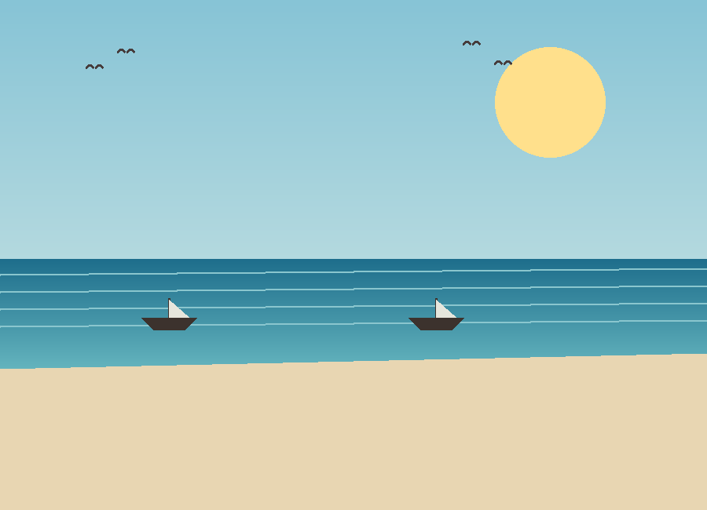
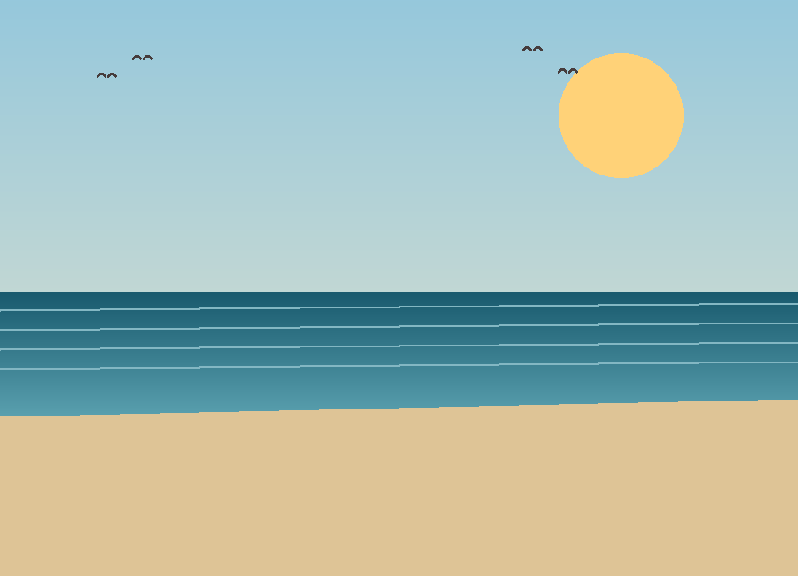
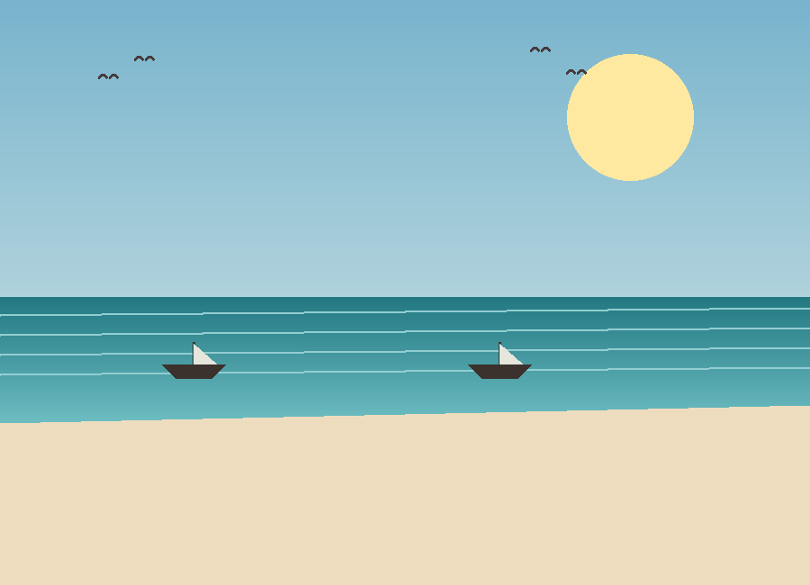
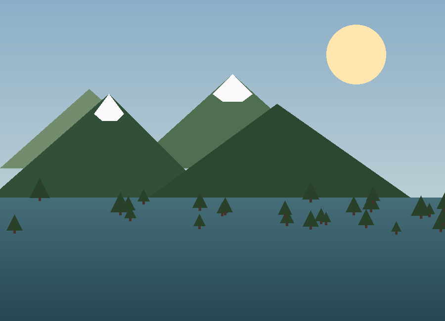
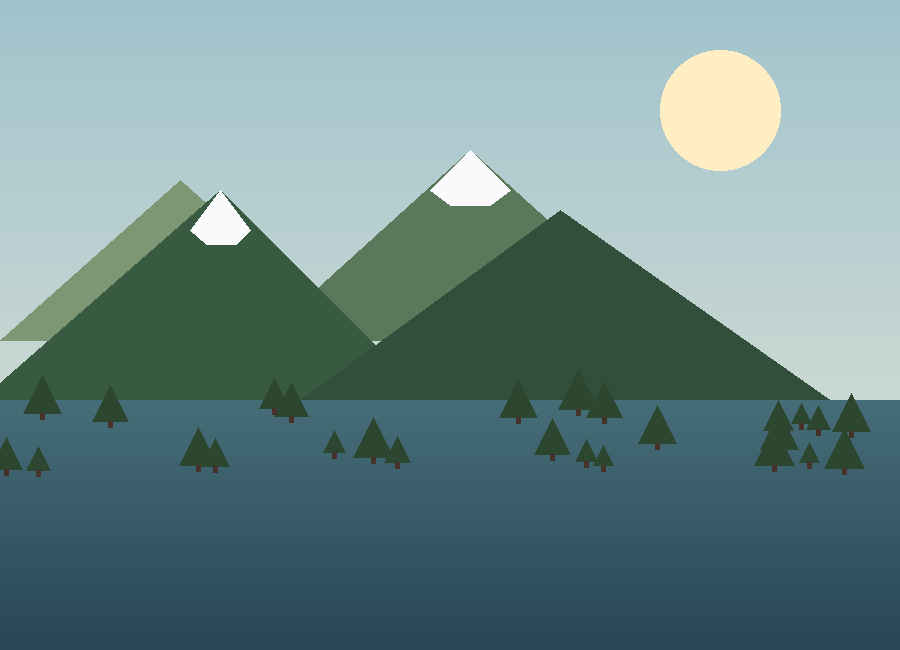

Mar del Plata
La ciudad balnearia más visitada del país: playas extensas, rambla animada y puesta de sol desde el Torreón del Monje.
Descargar itinerarioPlaya y montaña, sin escalas
Una guía sencilla para elegir tu próximo viaje, con reseñas breves e itinerarios listos para descargar.
Ver destinosCada categoría muestra sus propios destinos, con foto, reseña e itinerario descargable.

La ciudad balnearia más visitada del país: playas extensas, rambla animada y puesta de sol desde el Torreón del Monje.
Descargar itinerario
Único poblado costero de la Península Valdés: avistaje de ballenas, lobos marinos y acantilados sobre el golfo.
Descargar itinerario
Playas amplias entre médanos y bosques de pinos, ideal para bicicleta, cabalgatas y deportes de playa.
Descargar itinerarioLagos, bosques y montañas alrededor del Nahuel Huapi, con el clásico Circuito Chico y chocolate artesanal.
Descargar itinerario
Pueblo de estilo alpino a orillas del lago Lácar, puerta de entrada a la Ruta de los Siete Lagos.
Descargar itinerario
Pueblo peatonal en las Sierras Grandes de Córdoba, con cascadas, arroyos y casas de té de estilo alemán.
Descargar itinerarioRuta AR es un proyecto de guía turística mantenido por Estudiantes de Análisis de Sistemas, como parte de un trabajo práctico sobre generación e interacción con inteligencia artificial. El contenido es orientativo y se actualiza de forma manual.
¿Tenés dudas, sugerencias o querés proponer un destino? Escribinos.